%%{init: {'theme': 'base', 'themeVariables': {'background': '#FFFFFF', 'primaryColor': '#FFFFFF', 'primaryBorderColor': '#E5E5EA', 'primaryTextColor': '#1D1D1F', 'lineColor': '#86868B', 'secondaryColor': '#F5F5F7', 'tertiaryColor': '#FFFFFF', 'mainBkg': '#FFFFFF', 'nodeBorder': '#E5E5EA', 'clusterBkg': '#F5F5F7', 'clusterBorder': '#E5E5EA', 'titleColor': '#1D1D1F', 'edgeLabelBackground': '#FFFFFF'}}}%%
flowchart LR
A[Bisher: CPU und RAM] -->|PWM / GPIO| B[Aktorik]
C[Heute: Kommunikation] -->|Protokolle| D[Sensoren, Displays, WLAN]
style C fill:#FFFFFF,stroke:#E2001A,stroke-width:2px !important
05 · Serielle Bussysteme
Mikrocomputertechnik 3 · Die Big 3 — Wie Mikrocontroller mit der Welt sprechen
Prof. Dr.-Ing. Daniel Klünder
Willkommen zu Block 5!
- Willkommen zur fünften Vorlesung in Mikrocomputertechnik 3
- Bisher: Programmierung und Hardware weitgehend innerhalb des Chips
- Auch PWM war vor allem Energie an einem Ausgangs-Pin
- Heute: physikalische Grenze des SoCs überschreiten
- Ziel: komplexe Daten mit externen Chips austauschen (Text, Messwerte, Konfiguration)
Einordnung im Semester
Anknüpfung: PWM und Watchdog
Kurz-Recap aus Block 4 (Vertiefung im Übungsblatt):
- Hardware-PWM: ARR → Frequenz, CCR → Duty Cycle
- Signal läuft jitterarm in der Peripherie, CPU orchestriert
- Watchdog: Freeze erkennen, harter Reset als Selbsthilfe
- Leitprinzip: harte Pin-Arbeit in Hardware, nicht per Bit-Banging
Die SoC-Grenze
- Beispiel: digitaler Beschleunigungssensor (IMU) auf der Platine
- Der Sensor speichert Beschleunigungsrohwerte (X, Y, Z), hier als 16-Bit-Zweierkomplement
- Neigung ist daraus nur unter Bewegungsannahmen abgeleitet, kein Registerinhalt
- Frage: Wie kommen diese Bits in die Register/ALU unseres SoCs?
- Chips sind durch Kupferbahnen getrennt
- Wir brauchen ein physikalisches und zeitliches Regelwerk — ein Protokoll
SoC und Sensor — Schema
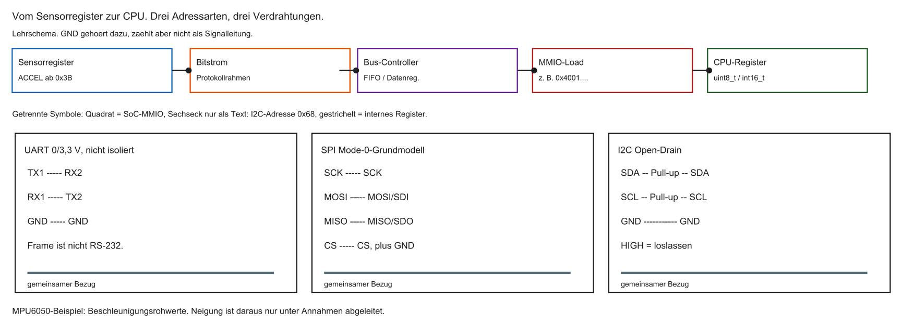
%%{init: {'theme': 'base', 'themeVariables': {'background': '#FFFFFF', 'primaryColor': '#FFFFFF', 'primaryBorderColor': '#E5E5EA', 'primaryTextColor': '#1D1D1F', 'lineColor': '#86868B', 'secondaryColor': '#F5F5F7', 'tertiaryColor': '#FFFFFF', 'mainBkg': '#FFFFFF', 'nodeBorder': '#E5E5EA', 'clusterBkg': '#F5F5F7', 'clusterBorder': '#E5E5EA', 'titleColor': '#1D1D1F', 'edgeLabelBackground': '#FFFFFF'}}}%%
flowchart LR
A[RISC-V SoC] <-->|Kupferbahnen| B[Sensor-Chip]
style A fill:#FFFFFF,stroke:#E2001A,stroke-width:2px !important
Parallel vs. seriell
Parallele Übertragung:
- Viele Leitungen (z. B. 32) — ein Wort in einem Takt
- So arbeiten typische interne CPU–RAM-Pfade
Serielle Übertragung:
- Wenige Leitungen (oft eine Datenleitung)
- Bits nacheinander — mehr Takte, weniger Pins
Parallel vs. seriell — Schema
%%{init: {'theme': 'base', 'themeVariables': {'background': '#FFFFFF', 'primaryColor': '#FFFFFF', 'primaryBorderColor': '#E5E5EA', 'primaryTextColor': '#1D1D1F', 'lineColor': '#86868B', 'secondaryColor': '#F5F5F7', 'tertiaryColor': '#FFFFFF', 'mainBkg': '#FFFFFF', 'nodeBorder': '#E5E5EA', 'clusterBkg': '#F5F5F7', 'clusterBorder': '#E5E5EA', 'titleColor': '#1D1D1F', 'edgeLabelBackground': '#FFFFFF'}}}%%
flowchart TD
P[Parallel] -->|viele Leitungen| E1[Empfänger]
S[Seriell] -->|Bit für Bit| E2[Empfänger]
style S fill:#FFFFFF,stroke:#E2001A,stroke-width:2px !important
Warum sich Seriell durchgesetzt hat
- Kosten und Platz: wenige Pins am Gehäuse sind günstiger
- Crosstalk: viele parallele Bahnen stören sich gegenseitig
- Clock Skew: bei hohen Frequenzen kommen Bits nicht mehr gleichzeitig an
- Seriell kann hohe Symbolraten auf wenigen Leitungen erreichen
- „Seriell ist schneller“ gilt nicht pauschal: Pins, Takt und Nutzdatenrate getrennt betrachten
- Mehrere serielle Lanes (USB, PCIe) sind ein anderes Modell als UART/SPI/I2C
Das Schieberegister
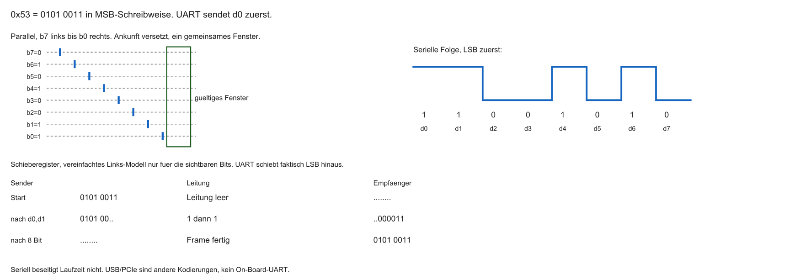
- Wandlung: parallele CPU-Daten → serieller Bitstrom
- Kern: Schieberegister (Kette von D-Flip-Flops, MCT1)
- CPU schreibt parallel; Kommunikations-Hardware schiebt Bit für Bit auf die Leitung
- Empfänger schiebt Bits wieder zu einem Wort zusammen
%%{init: {'theme': 'base', 'themeVariables': {'background': '#FFFFFF', 'primaryColor': '#FFFFFF', 'primaryBorderColor': '#E5E5EA', 'primaryTextColor': '#1D1D1F', 'lineColor': '#86868B', 'secondaryColor': '#F5F5F7', 'tertiaryColor': '#FFFFFF', 'mainBkg': '#FFFFFF', 'nodeBorder': '#E5E5EA', 'clusterBkg': '#F5F5F7', 'clusterBorder': '#E5E5EA', 'titleColor': '#1D1D1F', 'edgeLabelBackground': '#FFFFFF'}}}%%
flowchart LR
A[Bit 7] --> B[Bit 6] --> C[...] --> D[Bit 0] -->|Leitung| E[Empfänger]
style D fill:#FFFFFF,stroke:#E2001A,stroke-width:2px !important
Synchron vs. asynchron
Synchrone Kommunikation:
- Eigene Taktleitung (Clock, z. B. SCK)
- Empfänger tastet bei klaren Taktflanken ab — robust und schnell
Asynchrone Kommunikation:
- Keine Taktleitung — nur Daten
- Beide Seiten brauchen vereinbarte Bitzeiten (Baudrate)
Simplex, Half-Duplex, Full-Duplex
- Simplex: nur eine Richtung (z. B. GPS sendet Positionen)
- Half-Duplex: beide Richtungen, aber nicht gleichzeitig (ein Medium)
- Full-Duplex: getrennte Pfade — gleichzeitig senden und empfangen
%%{init: {'theme': 'base', 'themeVariables': {'background': '#FFFFFF', 'primaryColor': '#FFFFFF', 'primaryBorderColor': '#E5E5EA', 'primaryTextColor': '#1D1D1F', 'lineColor': '#86868B', 'secondaryColor': '#F5F5F7', 'tertiaryColor': '#FFFFFF', 'mainBkg': '#FFFFFF', 'nodeBorder': '#E5E5EA', 'clusterBkg': '#F5F5F7', 'clusterBorder': '#E5E5EA', 'titleColor': '#1D1D1F', 'edgeLabelBackground': '#FFFFFF'}}}%%
flowchart LR
A[A] -->|Simplex| B[B]
C[1] <-->|Half-Duplex| D[2]
E[1] -->|TX| F[2]
F -->|TX| E
Die Leitfrage des Tages
- Punkt-zu-Punkt ist einfach
- Moderne Platinen: viele Sensoren/Chips an einer CPU
- Nicht für jeden Teilnehmer eigene Leitungsbündel (Pin-Mangel)
- Wie teilen sich viele Geräte wenige Pins, ohne Chaos und Kurzschluss?
Leitfrage — Schema
%%{init: {'theme': 'base', 'themeVariables': {'background': '#FFFFFF', 'primaryColor': '#FFFFFF', 'primaryBorderColor': '#E5E5EA', 'primaryTextColor': '#1D1D1F', 'lineColor': '#86868B', 'secondaryColor': '#F5F5F7', 'tertiaryColor': '#FFFFFF', 'mainBkg': '#FFFFFF', 'nodeBorder': '#E5E5EA', 'clusterBkg': '#F5F5F7', 'clusterBorder': '#E5E5EA', 'titleColor': '#1D1D1F', 'edgeLabelBackground': '#FFFFFF'}}}%%
flowchart TD
CPU[CPU] --> S1[Sensor 1]
CPU --> S2[Sensor 2]
CPU --> Sn[Sensor n]
style CPU fill:#FFFFFF,stroke:#E2001A,stroke-width:2px !important
Agenda: Die „Big 3“
Industrie-Standards für On-Board-Kommunikation:
- UART — asynchron, Punkt-zu-Punkt
- SPI — synchron, sehr schnell (Displays, Flash)
- I2C — synchron, Netzwerk auf zwei Leitungen
| UART | SPI | I2C | |
|---|---|---|---|
| Signale ohne GND | 2 | 4, plus weitere CS | 2 |
| Takt | asynchron | synchron | synchron |
| Duplex | Full | Full im 4-Signal-Modell | Half |
| Grundtempo | Baud plus Framing | SCK aus dem Timingbudget | 100/400 kHz als Fokus |
Lernziele Block 5
- UART, SPI und I2C nach Pins, Takt und Topologie einordnen
- UART-Frame (Start/Stop/Parity) und Baudrate erklären
- SPI-Modi (CPOL/CPHA) und Chip-Select begründen
- I2C-Transaktion inkl. ACK/NACK und Repeated Start nachvollziehen
- Single-Ended vs. differenziell und EMI-Grundlagen einordnen
Was ist UART?
- UART: Universal Asynchronous Receiver-Transmitter
- Eher Schnittstelle/Direktverbindung als Multi-Drop-Bus
- Asynchron: kein Taktkabel
- Der UART-Frame ist nicht die elektrische Schnittstelle
- RS-232 nutzt andere Pegel; ein 0/3,3-V-Pin darf daran nicht direkt
- Heute oft: Debug/
printfüber einen Pegelwandler oder USB-UART
Punkt-zu-Punkt
- Typisch genau zwei Teilnehmer
- TX (Transmit) und RX (Receive)
- Kreuzverkabelung: TX1 → RX2, TX2 → RX1
- Direktes 0/3,3-V-Modell: gemeinsamer Bezug zwingend, keine galvanische Trennung
- Full-Duplex auf zwei Datenleitungen; GND, Versorgung und RTS/CTS zählen extra
%%{init: {'theme': 'base', 'themeVariables': {'background': '#FFFFFF', 'primaryColor': '#FFFFFF', 'primaryBorderColor': '#E5E5EA', 'primaryTextColor': '#1D1D1F', 'lineColor': '#86868B', 'secondaryColor': '#F5F5F7', 'tertiaryColor': '#FFFFFF', 'mainBkg': '#FFFFFF', 'nodeBorder': '#E5E5EA', 'clusterBkg': '#F5F5F7', 'clusterBorder': '#E5E5EA', 'titleColor': '#1D1D1F', 'edgeLabelBackground': '#FFFFFF'}}}%%
flowchart LR
T1[Gerät 1 TX] -->|Kabel| R2[Gerät 2 RX]
R1[Gerät 1 RX] -->|Kabel| T2[Gerät 2 TX]
Die Asynchronität
- Kein Taktkabel
- Problem: Ist HIGH eine Eins oder fünf Einsen hintereinander?
- Lösung: vereinbarte Bitdauer — gleiche Baudrate auf beiden Seiten
Die Baudrate
- Baud: Symbole pro Sekunde; hier typisch 1 Bit pro Symbol → bps
- Klassiker: 9600 oder 115200 Baud
- Bei 115200 Baud: Bitdauer \(\approx 1/115200 \approx 8{,}68\,\mu\mathrm{s}\)
- Prescaler/Baud-Generator aus Systemtakt in C konfigurieren
Der UART-Frame
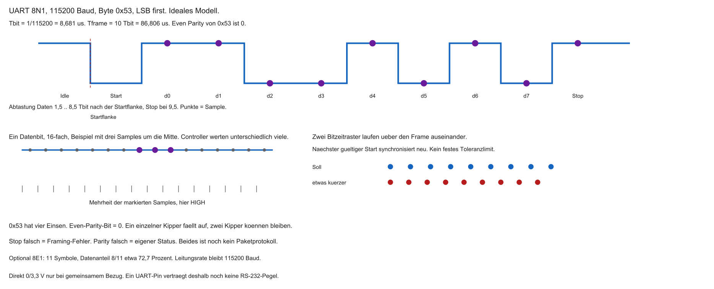
- Idle: Leitung typisch HIGH
- Frame-Aufbau:
- Start-Bit: LOW
- Daten: meist 8 Bit (oft LSB first)
- Parity: optional
- Stop-Bit(s): HIGH
| Abschnitt | Pegel / Inhalt |
|---|---|
| Idle | HIGH |
| Start | LOW |
| Data | 8 Bits |
| Stop | HIGH |
Das Start-Bit
- Start-Bit (LOW): Synchronisations-Trigger
- Fallende Flanke Idle→Start startet die Baud-Uhr des Empfängers
- Abtastung typisch nahe der Bitmitte (erstes Datenbit nach \(\approx 1{,}5\) Bitzeiten)
- Danach Abtastung im Raster von 1 Bitzeit; nach dem Frame Uhr stoppen
Oversampling
- Empfänger tastet oft mehrfach pro Bit ab (z. B. 16×)
- Mehrheitsentscheid um die Bitmitte filtert kurze Spikes
- Erhöht Robustheit bei gestörten Leitungen
Clock Drift und Stop-Bit
- Quarze weichen ab (Temperatur, Toleranz) → Clock Drift
- Lange ununterbrochene Ströme würden Abtastpunkte verschieben
- Start-Bit kalibriert neu; Stop-Bit (HIGH) stellt Idle wieder her
- Nächstes Start-Bit erzeugt wieder eine klare fallende Flanke
Das Parity-Bit
- Optional: Even oder Odd Parity über die Datenbits
- Empfänger prüft; bei Fehler oft Status/Interrupt (Framing/Parity Error)
| Daten (Beispiel) | Einsen | Even | Odd |
|---|---|---|---|
1010 0001 |
3 | 1 | 0 |
0000 0000 |
0 | 0 | 1 |
0x53 = 0101 0011 |
4 | 0 | 1 |
FIFOs im UART
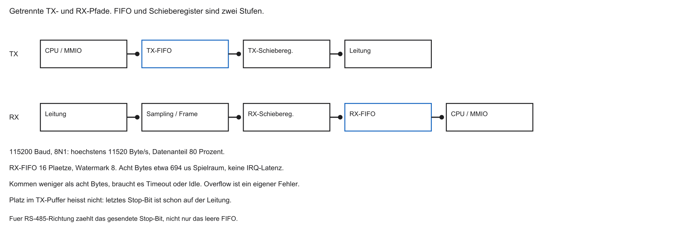
- Bei 115200 Baud und 8N1 (10 Bit/Frame): grob alle \(\approx 87\,\mu\mathrm{s}\) ein Byte
- Interrupt pro Byte belastet die CPU stark
- Lösung: RX/TX-FIFOs (z. B. 16–64 Bytes), Interrupt bei Watermark
%%{init: {'theme': 'base', 'themeVariables': {'background': '#FFFFFF', 'primaryColor': '#FFFFFF', 'primaryBorderColor': '#E5E5EA', 'primaryTextColor': '#1D1D1F', 'lineColor': '#86868B', 'secondaryColor': '#F5F5F7', 'tertiaryColor': '#FFFFFF', 'mainBkg': '#FFFFFF', 'nodeBorder': '#E5E5EA', 'clusterBkg': '#F5F5F7', 'clusterBorder': '#E5E5EA', 'titleColor': '#1D1D1F', 'edgeLabelBackground': '#FFFFFF'}}}%%
flowchart LR
K[Kabel] --> F[UART-FIFO]
F -->|Watermark| ISR[CPU-ISR]
style F fill:#FFFFFF,stroke:#E2001A,stroke-width:2px !important
Nachteile von UART
- Keine Geräteadressen → schlecht skalierbar (kein Multi-Drop)
- Baudrate muss auf beiden Seiten übereinstimmen (starr konfiguriert)
- Framing-Overhead (Start/Stop/Parity) und asynchrone Grenzen
- Für Displays/Kameras/viele Sensoren meist ungeeignet
Zusammenfassung UART
| Eigenschaft | UART |
|---|---|
| Leitungen | TX, RX (+ GND) |
| Takt | asynchron (Baudrate) |
| Duplex | Full-Duplex |
| Topologie | Point-to-Point (2 Teilnehmer) |
| Overhead | Start/Stop/(Parity) |
| Einsatz | Terminal, GPS, Bluetooth-Module |
Aufgabe — UART-Frame
Dekodieren Sie das Datenbyte. Idle ist HIGH, dann folgen Start, acht Datenbits LSB first und Stop.
- Sichtbare Datenbits nach dem Start: 1, 1, 0, 0, 1, 0, 1, 0
- Welche schriftliche MSB-Darstellung hat das Byte?
- Even Parity: welches Parity-Bit entsteht?
Was ist SPI?
- SPI: Serial Peripheral Interface (u. a. Motorola, 1980er)
- Synchron: eigene Taktleitung — kein Baudraten-Drift wie bei UART
- Full-Duplex, oft sehr hohe SCK-Taktraten (einige zehn MHz möglich; Bitrate \(\approx\) SCK bei 1 Bit/Takt)
- Wenig Framing-Overhead: Bits folgen dem Takt
Die Synchronität (SCK)
- Taktleitung: SCK (Serial Clock)
- Empfänger braucht keinen eigenen Baud-Generator
- Typisch: bei definierter Flanke Datenleitung abtasten
- Deterministisch, unempfindlich gegen Quarz-Abweichungen zwischen den Chips
| Phase | Bedeutung |
|---|---|
| SCK-Flanke | Abtast-/Verschiebezeitpunkt |
| Datenleitung | gültiges Bit im vereinbarten Fenster |
Die 4-Draht-Architektur
Klassisch 4 Signale (+ GND):
| Signal | Richtung | Zweck |
|---|---|---|
| SCK | Master → Slave | Takt |
| MOSI | Master → Slave | Daten zum Slave |
| MISO | Slave → Master | Daten zum Master |
| CS / SS | Master → Slave | Slave auswählen (meist Active-Low) |
Controller und Target
Ältere Datenblätter sagen Master und Slave. Hier: Controller und Target. MOSI und MISO bleiben die Signalnamen.
- Controller (meist die MCU): erzeugt SCK, steuert CS, startet Transfers
- Target: antwortet nur, wenn selektiert und getaktet
- Ein Controller: ein aktiver Taktgeber in diesem Grundmodell
- Das Target sendet nicht unaufgefordert
Full-Duplex: Ringtausch
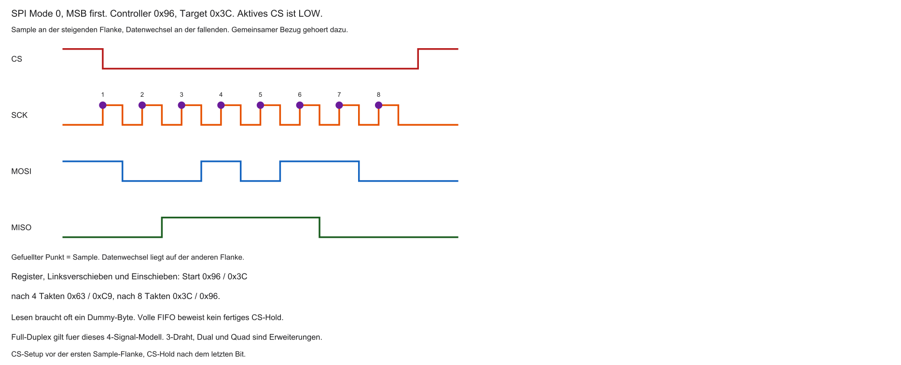
- Pro Takt: Bit auf MOSI hinaus und Bit auf MISO herein
- Nach \(n\) Takten: Schieberegister getauscht
- Auch zum reinen Lesen: Dummy-Bytes senden, damit SCK läuft
%%{init: {'theme': 'base', 'themeVariables': {'background': '#FFFFFF', 'primaryColor': '#FFFFFF', 'primaryBorderColor': '#E5E5EA', 'primaryTextColor': '#1D1D1F', 'lineColor': '#86868B', 'secondaryColor': '#F5F5F7', 'tertiaryColor': '#FFFFFF', 'mainBkg': '#FFFFFF', 'nodeBorder': '#E5E5EA', 'clusterBkg': '#F5F5F7', 'clusterBorder': '#E5E5EA', 'titleColor': '#1D1D1F', 'edgeLabelBackground': '#FFFFFF'}}}%%
flowchart LR
M[Master-Schieberegister] -->|MOSI| S[Slave-Schieberegister]
S -->|MISO| M
style M fill:#FFFFFF,stroke:#E2001A,stroke-width:2px !important
Chip Select (CS)
- SCK/MOSI/MISO parallel an mehrere Slaves möglich
- CS wählt den aktiven Slave (meist Active-Low)
- Andere Slaves: Bus ignorieren, MISO hochohmig
Star-Routing
- Jeder Slave: eigenes CS → eigener GPIO am Master
- 10 Slaves ≈ 3 Busleitungen + 10 CS = viele Pins
- SPI skaliert bei vielen Teilnehmern pinseitig schlecht
%%{init: {'theme': 'base', 'themeVariables': {'background': '#FFFFFF', 'primaryColor': '#FFFFFF', 'primaryBorderColor': '#E5E5EA', 'primaryTextColor': '#1D1D1F', 'lineColor': '#86868B', 'secondaryColor': '#F5F5F7', 'tertiaryColor': '#FFFFFF', 'mainBkg': '#FFFFFF', 'nodeBorder': '#E5E5EA', 'clusterBkg': '#F5F5F7', 'clusterBorder': '#E5E5EA', 'titleColor': '#1D1D1F', 'edgeLabelBackground': '#FFFFFF'}}}%%
flowchart LR
CPU -->|SCK MOSI MISO| S1[Slave 1]
CPU -->|SCK MOSI MISO| S2[Slave 2]
CPU -->|CS1| S1
CPU -->|CS2| S2
style CPU fill:#FFFFFF,stroke:#E2001A,stroke-width:2px !important
Daisy-Chaining
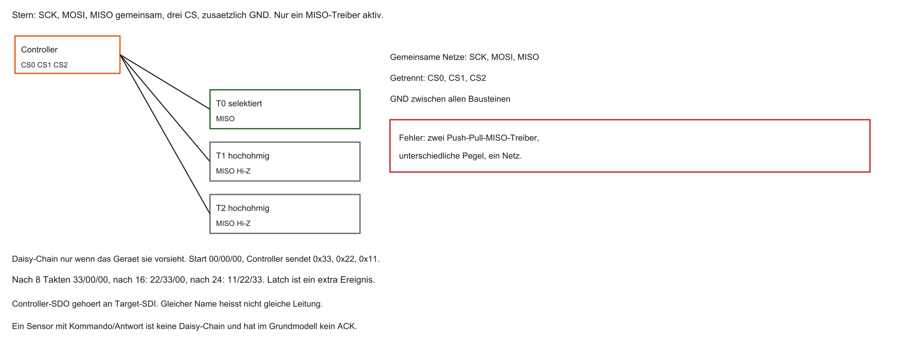
- Ein CS für mehrere Schieberegister in Serie
- MOSI → Slave1 → … → zurück MISO
- CPU schiebt lange Bitkette; Daten wandern durch die Kette
- Typisch bei LED-Ketten / Schieberegister-Arrays
%%{init: {'theme': 'base', 'themeVariables': {'background': '#FFFFFF', 'primaryColor': '#FFFFFF', 'primaryBorderColor': '#E5E5EA', 'primaryTextColor': '#1D1D1F', 'lineColor': '#86868B', 'secondaryColor': '#F5F5F7', 'tertiaryColor': '#FFFFFF', 'mainBkg': '#FFFFFF', 'nodeBorder': '#E5E5EA', 'clusterBkg': '#F5F5F7', 'clusterBorder': '#E5E5EA', 'titleColor': '#1D1D1F', 'edgeLabelBackground': '#FFFFFF'}}}%%
flowchart LR
CPU -->|MOSI| S1[Slave 1]
S1 --> S2[Slave 2]
S2 -->|MISO| CPU
Push-Pull und Geschwindigkeit
- SPI-Treiber typisch Push-Pull: aktiv HIGH und aktiv LOW
- Steile Flanken, schnelles Umladen der Leitungskapazität
- Ermöglicht hohe SCK-Frequenzen (je nach Layout und Slave)
CPOL und CPHA
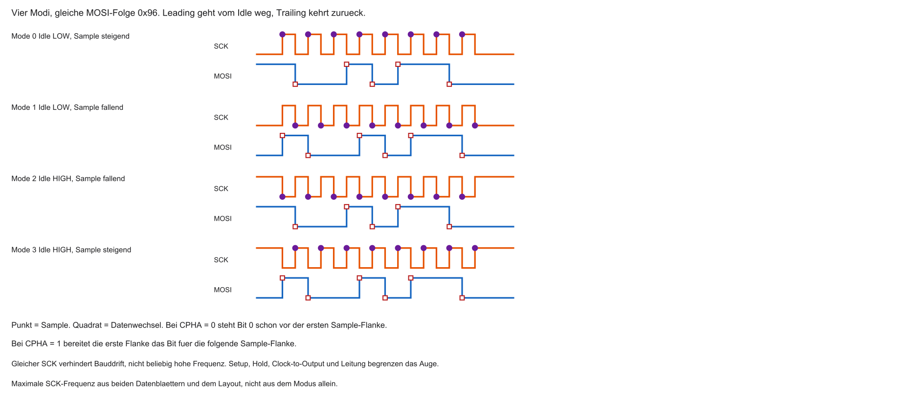
- Vier SPI-Modi (0–3): Kombination aus Ruhepegel und Abtastflanke
- CPOL: Idle LOW oder HIGH?
- CPHA: Abtastung bei erster oder zweiter Flanke?
- Immer Sensor-Datenblatt und Master-Register abgleichen — der Modus entscheidet über gültige Daten
| Modus | CPOL | CPHA | Kurz |
|---|---|---|---|
| 0 | 0 | 0 | Idle LOW, Sample steigend |
| 1 | 0 | 1 | Idle LOW, Sample fallend |
| 2 | 1 | 0 | Idle HIGH, Sample fallend |
| 3 | 1 | 1 | Idle HIGH, Sample steigend |
Nachteile von SPI
- Viele CS-Leitungen bei Star-Routing
- Nur physikalisches Bit-Schieben: keine Adressen, kein ACK in der Grundschicht
- Single-Master — Multi-Master schwierig
- Fehlende Slaves erkennt die Hardware nicht automatisch
Typische Einsatzgebiete
- Große Datenmengen, wenige Teilnehmer
- TFT-Displays, SD-Karten, externe Flash/EEPROM (auch Quad-SPI)
- Weniger ideal: dutzende langsame Sensoren (Pin-Overhead)
Zusammenfassung SPI
| Eigenschaft | SPI |
|---|---|
| Leitungen | SCK, MOSI, MISO, CS (+…) |
| Takt | synchron (Master) |
| Duplex | Full (Ringtausch) |
| Netz | Master/Slave, Star oder Daisy-Chain |
| Speed | hoch: SCK oft 10–50 MHz (\(\approx\) Bitrate in Mbit/s bei 1 Bit/Takt) |
| Einsatz | Display, SD, Flash |
Aufgabe — SPI-Flanke
Mode 0, Idle LOW. Controller sendet 0x96, Target sendet 0x3C, MSB first.
- Welche Flanke tastet ab, welche darf das nächste Bit setzen?
- Welcher Registerstand gilt nach vier Takten im Links-Schiebe-Modell?
Was ist I2C?
- I2C: Inter-Integrated Circuit (Philips/NXP, 1980er)
- Rückgrat vieler Sensor-Netzwerke auf der Platine
- Synchron: Taktleitung
SCL(Serial Clock) - Half-Duplex: eine Datenleitung
SDA(Serial Data) — nicht gleichzeitig beide Richtungen - Viele Bausteine an exakt zwei Signalen (+ GND)
Ein echter Bus
- Kein SPI-Star-Routing mit vielen CS-Pins
SCLundSDAals gemeinsame Busleitungen über die Platine- Alle Teilnehmer parallel angeklemmt
- Dutzende Slaves an denselben zwei MCU-Pins möglich
%%{init: {'theme': 'base', 'themeVariables': {'background': '#FFFFFF', 'primaryColor': '#FFFFFF', 'primaryBorderColor': '#E5E5EA', 'primaryTextColor': '#1D1D1F', 'lineColor': '#86868B', 'secondaryColor': '#F5F5F7', 'tertiaryColor': '#FFFFFF', 'mainBkg': '#FFFFFF', 'nodeBorder': '#E5E5EA', 'clusterBkg': '#F5F5F7', 'clusterBorder': '#E5E5EA', 'titleColor': '#1D1D1F', 'edgeLabelBackground': '#FFFFFF'}}}%%
flowchart LR
CPU[CPU] <-->|SDA und SCL| Bus((2-Draht-Bus))
Bus --- S1[Sensor 1]
Bus --- S2[Sensor 2]
Bus --- S3[Sensor 3]
style Bus fill:#FFFFFF,stroke:#E2001A,stroke-width:2px !important
Adressierung statt CS-Kabel
- Jeder Chip: feste Adresse (meist 7 Bit, z. B.
0x68für MPU6050) - Master sendet Adresse auf SDA
- Nur der angesprochene Slave antwortet; andere ignorieren
- 7 Bit \(\Rightarrow\) theoretisch 128 Slots; praktisch weniger (reservierte Adressen); optional auch 10-Bit-Adressierung
Open-Drain
- Problem: zwei Treiber gleichzeitig HIGH und LOW → bei Push-Pull Kurzschlussrisiko
- I2C: Open-Drain / Open-Collector
- Geräte können nur aktiv nach GND (LOW) ziehen
- HIGH: Leitung loslassen (hochohmig) — nicht aktiv „hochdrücken“
%%{init: {'theme': 'base', 'themeVariables': {'background': '#FFFFFF', 'primaryColor': '#FFFFFF', 'primaryBorderColor': '#E5E5EA', 'primaryTextColor': '#1D1D1F', 'lineColor': '#86868B', 'secondaryColor': '#F5F5F7', 'tertiaryColor': '#FFFFFF', 'mainBkg': '#FFFFFF', 'nodeBorder': '#E5E5EA', 'clusterBkg': '#F5F5F7', 'clusterBorder': '#E5E5EA', 'titleColor': '#1D1D1F', 'edgeLabelBackground': '#FFFFFF'}}}%%
flowchart TD
Bus[SDA] --- A[Schalter Chip A]
Bus --- B[Schalter Chip B]
A --> G1[GND]
B --> G2[GND]
style Bus fill:#FFFFFF,stroke:#E2001A,stroke-width:2px !important
Pull-Up-Widerstände
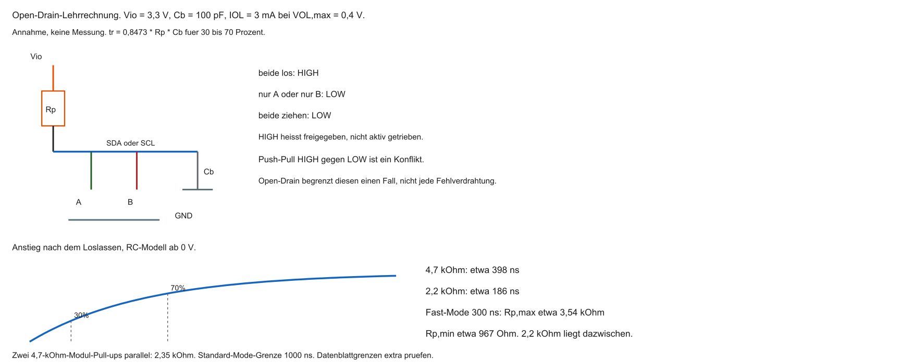
- Ohne aktives HIGH: je ein Pull-up an SDA und an SCL
- „Wenige kΩ“ ist keine Dimensionierung: Kapazität, Rise Time und Sinkstrom begrenzen \(R_P\)
- Je einer an SDA und SCL gegen \(V_{IO}\) (z. B. \(3{,}3\,\mathrm{V}\))
- Alle loslassen → Pull-up zieht HIGH (logisch 1)
- Ein Chip zieht → Leitung LOW (logisch 0)
Dominantes LOW (Wired-AND)
- LOW ist dominant, HIGH rezessiv
- Gleichzeitig 1 und 0 → Leitung wird 0
- Sender kann mitlesen: „Ich wollte 1, Bus ist 0“ → Überstimmt
I2C-Nachrichtenaufbau
Typische Transaktion:
- START (SDA fällt bei SCL HIGH)
- 7-Bit-Adresse
- R/W-Bit (0 = Write, 1 = Read)
- ACK vom Empfänger
- Datenbyte(s) + ACK/NACK
- STOP
| Feld | Bedeutung |
|---|---|
| START | Bus belegen, Slaves wecken |
| Adresse + R/W | Ziel und Richtung |
| ACK | Quittung |
| DATA | Nutzdaten |
ACK und NACK
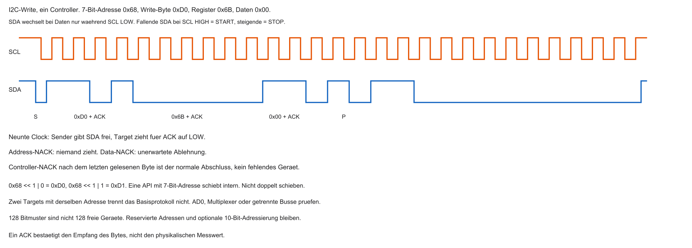
- Nach jedem Byte: 9. Takt für Quittung
- Sender lässt SDA los (Tendenz HIGH = NACK)
- Empfänger zieht SDA auf LOW = ACK
- Address-NACK: Gerät fehlt oder hört nicht. Data-NACK: unerwartete Ablehnung. Letzter Read-NACK: normaler Abschluss durch den Controller.
Senden vs. Empfangen
Master Write:
- Adresse + R/W \(= 0\) → ACK → Daten vom Master → ACK vom Slave
Master Read:
- Adresse + R/W \(= 1\) → ACK → Slave treibt SDA, Master taktet weiter SCL
- Master sendet ACK/NACK für empfangene Bytes
STOP-Condition
- Master beendet: bei SCL HIGH steigt SDA von LOW nach HIGH
- Signal: Bus frei für neue Transaktionen
- Slaves gehen zurück in Idle
Clock Stretching
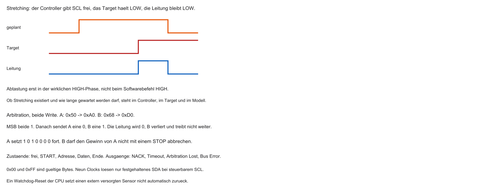
- Zu schneller Master-Takt? Slave kann SCL auf LOW halten
- Master will HIGH, sieht aber LOW (Wired-AND) → wartet
- Slave lässt los → Transfer geht weiter
Multi-Master
- Mehrere Master auf demselben Bus möglich
- Beide können START generieren und Sensoren ansprechen
- Risiko: gleichzeitiger Buszugriff → Arbitration nötig
Arbitration
- Bei Kollision entscheidet dominantes LOW
- Wer 1 senden will, aber 0 liest, verliert und bricht ab
- Gewinner sendet weiter — Nachricht bleibt intakt
Nachteile von I2C
- Open-Drain + Pull-up: langsamere Flanken als Push-Pull
- Typisch Standard/Fast Mode: \(100\,\mathrm{kHz}\) / \(400\,\mathrm{kHz}\) (vs. SPI: SCK oft einige zehn MHz)
- Buskapazität begrenzt Teilnehmerzahl und Kabellänge
Zusammenfassung der Big 3
| Merkmal | UART | SPI | I2C |
|---|---|---|---|
| Signale ohne GND | TX, RX | SCK, MOSI, MISO, CS | SDA, SCL |
| Takt | asynchron | Controller-Takt | Controller-Takt |
| Routing | Punkt-zu-Punkt | CS oder geeignete Daisy-Chain | adressierter Bus |
| Tempo | Baud mal Framing | Timingbudget beider Bausteine | 100/400 kHz als Fokus |
| Treiber | Push-Pull, Pegel beachten | Push-Pull | Open-Drain, Pull-ups |
| Einsatz | Debug, Module | Display, Flash | Sensoren auf der Platine |
Aufgabe — Adresse, ACK und Pull-up
- Geräteadresse
0x68. Welches Byte geht bei Write, welches bei Read auf den Bus? - Wer zieht SDA im neunten Takt eines Writes? Wer erzeugt den NACK nach dem letzten gelesenen Byte?
- Lehrannahme: \(V_{IO}=3{,}3\,\mathrm{V}\), \(C_B=100\,\mathrm{pF}\), \(3\,\mathrm{mA}\) bei \(0{,}4\,\mathrm{V}\), \(t_r=0{,}8473\,R_P C_B\). Liegt \(2{,}2\,\mathrm{k}\Omega\) im Fast-Mode-Fenster?
Grenzen von Single-Ended
- UART/SPI/I2C: Single-Ended — Pegel gegen gemeinsames GND
- Lange Kabel / getrennte Massepotentiale → Referenz driftet
- Empfänger sieht verfälschte Spannungen → Bitfehler
Elektromagnetische Interferenzen (EMI)
- Lange Leitungen wirken als Antennen
- Motoren/Wechselrichter induzieren Spikes
- Single-Ended: Spike kann 0 als 1 erscheinen lassen
Differentielle Übertragung
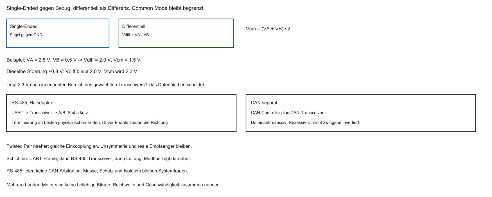
- Signal auf zwei Leitungen: normal und invertiert
- Empfänger misst Differenz \(V_A - V_B\), nicht gegen GND
- Gleiche Störung auf beiden Leitungen ändert die Differenz nicht
- Der Common-Mode-Bereich des Empfängers bleibt endlich; große Potentialunterschiede können weiter stören oder schädigen
%%{init: {'theme': 'base', 'themeVariables': {'background': '#FFFFFF', 'primaryColor': '#FFFFFF', 'primaryBorderColor': '#E5E5EA', 'primaryTextColor': '#1D1D1F', 'lineColor': '#86868B', 'secondaryColor': '#F5F5F7', 'tertiaryColor': '#FFFFFF', 'mainBkg': '#FFFFFF', 'nodeBorder': '#E5E5EA', 'clusterBkg': '#F5F5F7', 'clusterBorder': '#E5E5EA', 'titleColor': '#1D1D1F', 'edgeLabelBackground': '#FFFFFF'}}}%%
flowchart LR
S[Sender] -->|A| E[Empfänger]
S -->|B invertiert| E
E -->|Differenz| CPU[Logik]
style E fill:#FFFFFF,stroke:#E2001A,stroke-width:2px !important
Twisted Pair
- Adern eng verdrillt
- Gleichtaktstörung hebt beide Adern ähnlich an
- Differenz bleibt: \((V_A+\Delta)-(V_B+\Delta)=V_A-V_B\)
RS-485
- Physikalische Schicht für lange Strecken (oft mit UART-Logik)
- Transceiver: Single-Ended TX/RX → differenziell A/B
- Reichweite und Bitrate gelten gemeinsam; „einige hundert Meter“ ist keine beliebige Geschwindigkeit
- Häufig mit Protokollen wie Modbus
CAN-Bus
- Controller Area Network (Bosch) — Standard im Fahrzeug
- Differenziell (CAN_H / CAN_L)
- Multi-Drop mit Arbitration (dominant/rezessiv)
- Verbindet Steuergeräte über ein Twisted-Pair
Warum im Labor I2C?
- MCT3-Fokus: Sensoren wenige Zentimeter neben der MCU
- Differentielle Transceiver: Platz, Strom, Kosten
- Für die „letzte Meile“ auf dem Board: I2C oft die passende Wahl
Aufgabe — Burst und Common Mode
- Bytes
10 00 E0 00 40 00ab Register0x3B, Bereich \(\pm 2\,\mathrm{g}\) mit 16384 LSB/g. Welche Werte in g entstehen? - \(V_A=2{,}5\,\mathrm{V}\), \(V_B=0{,}5\,\mathrm{V}\), danach \(+0{,}8\,\mathrm{V}\) auf beiden Leitungen. Was bleibt gleich, was ändert sich?
Ausblick Labor: IMU per I2C
Geplantes Szenario:
- 3-Achsen-Beschleunigungssensor (IMU) am I2C-Bus
- Master: SCL erzeugen, Adresse senden
- Write: Sensor konfigurieren/aufwecken
- Read: Rohwerte X/Y/Z holen
MEMS kurz
- MEMS: mikromechanische Strukturen im Silizium
- Beschleunigung verbiegt Strukturen → Kapazität ändert sich
- Wandlung in Digitalwerte → Register im Sensor
- Diese Register lesen wir per I2C
Registerkarte des Sensors
- Sensor hat eigene Memory Map (Datenblatt!)
- Beispiele aus der MPU-6000/MPU-6050-Registerkarte, im Labor gegen das Datenblatt prüfen:
0x6B: Power Management, Aufwecken ist bausteinspezifisch0x1C: Beschleunigungsbereich; \(\pm 2\,\mathrm{g}\) entspricht im Datenblatt oft 16384 LSB/g0x3Bbis0x40: X, Y, Z je High/Low, zusammenhängend lesbar
- I2C: erst Geräteadresse, dann Registerzeiger, dann Daten
C: I2C initialisieren
Beispielhafte Adressen und Bits (fiktiv — immer Datenblatt prüfen):
#define I2C_BASE 0x40010000u
#define I2C_CR1 (*(volatile uint32_t *)(I2C_BASE + 0x00))
void i2c_init(void) {
/* Davor, plattformspezifisch: Taktfreigabe, Pin-Mux, Open-Drain, Pull-up. */
I2C_CR1 |= (1u << 0); /* Enable — Bitlage nur im Lehrmodell */
I2C_CR1 |= (1u << 8); /* Controller-Modus — nur schematisch */
}- Register-Offsets und Bitpositionen sind plattformspezifisch
- Nicht 1:1 auf einen realen Chip übernehmen
C: Bus-Frequenz
- Typisch \(100\,\mathrm{kHz}\) oder \(400\,\mathrm{kHz}\)
- Aus Systemtakt (z. B. \(100\,\mathrm{MHz}\)) Teiler setzen
C: Write-Transaktion
Ablauf: START → Adresse+W → Reg → Daten → STOP
enum {
I2C_OK = 0,
I2C_NACK = 1,
I2C_TIMEOUT = 2,
I2C_ARB_LOST = 3,
I2C_BUS_ERR = 4
};
static int i2c_fail(int st) {
if (st != I2C_ARB_LOST && i2c_owns_bus())
i2c_send_stop();
return st;
}
int sensor_wakeup(void) {
int st;
i2c_send_start();
i2c_send_byte(0xD0u);
st = wait_phase();
if (st != I2C_OK) return i2c_fail(st);
i2c_send_byte(0x6Bu);
st = wait_phase();
if (st != I2C_OK) return i2c_fail(st);
i2c_send_byte(0x00u);
st = wait_phase();
if (st != I2C_OK) return i2c_fail(st);
i2c_send_stop();
return I2C_OK;
}C: Read mit Repeated Start
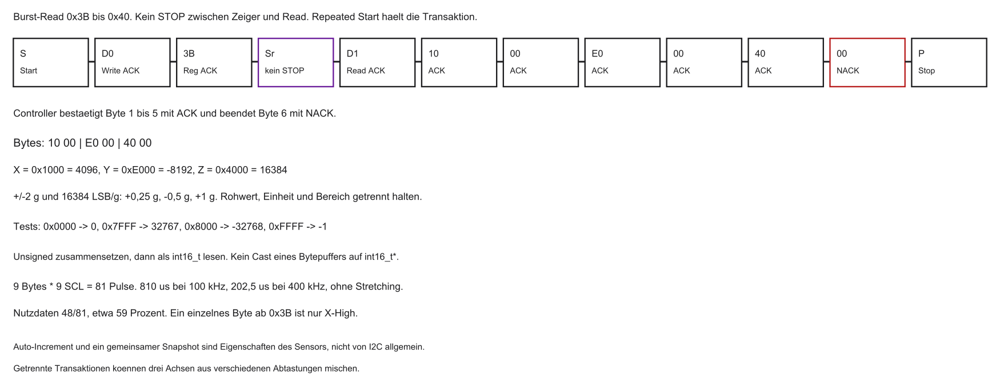
Zuerst Registerzeiger setzen (Write), dann Repeated START und Read:
int read_accel_xyz(uint8_t out[6]) {
int st;
i2c_send_start();
i2c_send_byte(0xD0u);
st = wait_phase();
if (st != I2C_OK) return i2c_fail(st);
i2c_send_byte(0x3Bu);
st = wait_phase();
if (st != I2C_OK) return i2c_fail(st);
i2c_send_start();
i2c_send_byte(0xD1u);
st = wait_phase();
if (st != I2C_OK) return i2c_fail(st);
for (int i = 0; i < 5; i++) {
st = i2c_read_ack(&out[i]);
if (st != I2C_OK) return i2c_fail(st);
}
st = i2c_read_nack(&out[5]);
if (st != I2C_OK) return i2c_fail(st);
i2c_send_stop();
return I2C_OK;
}Renode: virtueller I2C-Sensor
- Ein Registermodell kann ACK und Bursts nachbilden
- Es beweist keine realen Flanken, keine RC-Zeit und keine zyklusgenaue Controllerlatenz
Sensors.MPU6050undFeedSamplesind hier nicht als vorhandene API geprüft
Platine beschreiben (.repl)
Im Repository liegt keine .repl. Der folgende Typname ist ein ungeprüftes Schema, keine Renode-API dieser Lehrveranstaltung:
- Erst die installierte Renode-Version und das echte Peripheriemodell prüfen
- Fehlt das Modell, bleibt der Treiber ein Lehrmodell mit explizitem Registervertrag
Stimuli im Startskript (.resc)
Schematisch:
- Virtuelle Registertransfers können Treiberfehler zeigen
- Sie beweisen keine Pull-up-Auslegung, keine RC-Flanke und keine Controllerlatenz
Endianness
- 16-Bit-Werte oft als High- dann Low-Byte (Big-Endian am Sensor)
- In C zusammensetzen:
Polling vs. Interrupt
- Blockierendes Polling, Zustands-Polling und IRQ/DMA sind drei Implementierungen
- Ein I2C-IRQ ist auf RISC-V eine externe Quelle, bei einem PLIC die Claim-ID, keine eigene
mcause-Gerätekennung - Jede Warteschleife braucht eine Deadline. Ein CPU-Reset setzt den extern versorgten Sensor nicht zurück
Zusammenfassung Block 5
- Seriell ersetzt parallel extern: Pins, Crosstalk, Skew
- UART: asynchron, Punkt-zu-Punkt, Debug
- SPI: synchron, schnell, CS-intensiv
- I2C: adressierter Open-Drain-Bus auf zwei Leitungen
- Differenziell (RS-485, CAN): lange, gestörte Strecken
- Treiber: MMIO, Adresse|R/W, Registerzeiger, Bit-Shifting
Ausblick und Abschluss
- Übungsblatt: I2C in Renode Schritt für Schritt
- Ziel: erste virtuelle Beschleunigungswerte auslesen
Vielen Dank — viel Erfolg im Labor.